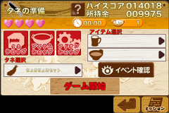

●たね準備の説明
ショップのボタンとゲームに必要なタネ（天ぷら）を選択する画面になります。
アイテムはゲーム中に影響が出ます。
ゲーム開始のボタンをタッチするとゲームが始まります。

●選択画面の説明
1.タネを選択
このゲームでのタネとは天ぷら１セットのこといいます。
１つのタネには天ぷらが最大３つのセットになります。
天ぷらにはそれぞれのあがる速度、獲得する金額、獲得するスコアが違います。
ゲーム中では天ぷらが増えていくほど難しくなります。
2.アイテムを選択
ゲームに影響が出るもので使う事によってゲームを有利に進める事が出来るようになります。
アイテムには２種類あり、それぞれセッティングする場所（以下、スロット）が決められています。
１つのスロットには１つのアイテムをセッティングすることが出来ます。